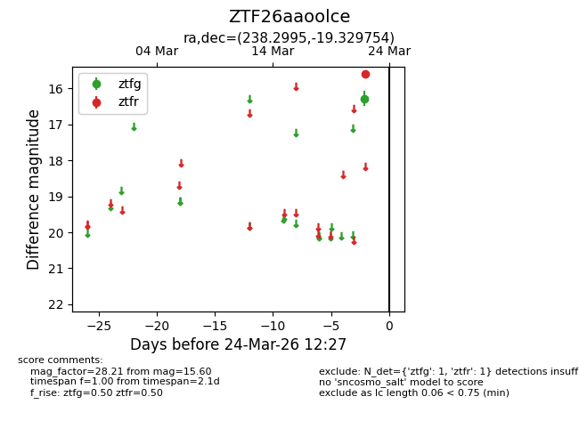
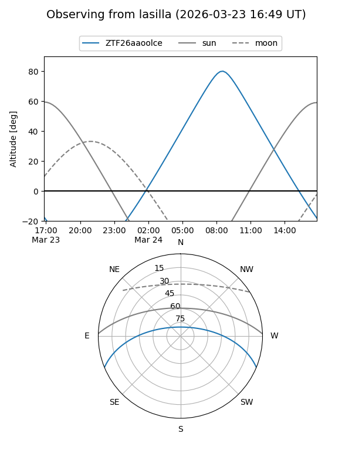
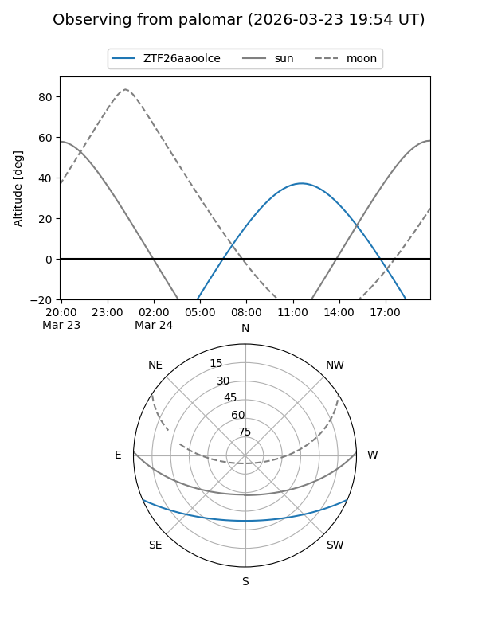

ZTF26aaoolce
Target ZTF26aaoolce at 2026-03-24 12:30
Aliases and brokers:
FINK: link
Lasair: link
ALeRCE: link
alt names
ZTF26aaoolce (ztf,fink_ztf)
Coordinates:
equatorial (ra, dec) = 238.2995,-19.32975
equatorial (HMS+DMS) = 15:53:11.87,-19:19:47.11
galactic (l, b) = (351.3530,+25.99745)
Flags:
Photometry:
last ztfg=16.28, ztfr=15.60
1 ztfg, 1 ztfr detections
Lightcurve

Visibility


Additional plots